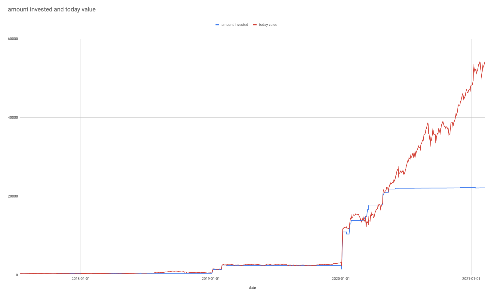

Had a good time today writing code. Well in hindsight it was good.
Wanted to compare my stock portfolio vs the market in a variety of forms.
Spent most of the morning wrestling with API's and Golang.
Eventually I found what I wanted to use. The yfinance
unofficial API in Python. Thank God for this library. It made
life 100x easier and avoids dealing with shitty API's that
rate limit the fuck out of you and also don't have all the data
you might want. Yahoo! atleast has all the important data.
This library exposes the data in a pandas.DataFrame which I
haven't used since CSE 15L my freshman year of college. Pretty
funny, and I've heard a lot of good things about it, but never
had the knowledge to use it or the desire to learn. It has been
fantastic however a bit awkward at times to work with. I know
it can do what I want, but expressing it in the syntax is not
always clear and requires me to Google a few times to get it
right.
Trying to write this in Go led me to about 300 lines before I gave up. It took just over 100 lines of some pretty verbose python to do it. I probably need to work with Go more often but this was such a scripting problem, it lends itself to Python much more easily.
Use the right tool for the job. Worry about the rest later.
Here's a screenshot of the data so far. I want to be able to extract data at a more granular level but not sure how I want to do this yet. Will need to encapsulate more data in each day to be able to add and remove it dynamically.
Specifically I want to look at my portfolio if I remove TSLA from it. I think it would look a lot different and then would give me a much more accurate view of how well I am doing. Again all relative to the market and ideally index funds.
Heres a screenshot.
